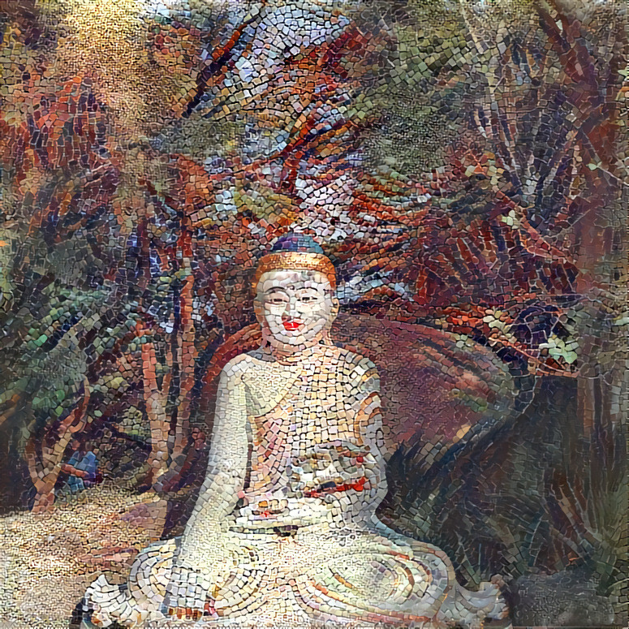

Coronavirus Media Propagation
Sentiment Analysis on twitter Data
Jul 28, 2019
Independent Amateur study on opinion mining in Twitter about coronavirus and its social implications.
Rua Faria Lima
Imagen onirica, Jul 28, 2019
Imagen de la rua Faria lima interpretada por una obra de arte digital.
Serenidad
Imagen onirica, Jul 23, 2019
Imagen tomada en el templo Zu Lai en Sao Paulo por mi, interpretada por una obra de arte en mosaico.
ｃｏｌｏｒｅｓ （ヒぶま）
Imagen onirica, Jun 24, 2019
La ciudad perdida
Imagen onirica, May 25, 2019
Con la ayuda de Deep Dream Generator podemos ver a la ciudad Colombiana de Bucaramanga usando una obra de arte digital. La imagen de Bucaramanga la tomé yo.

Sensaciones
Imagen onirica, May 11, 2019
Deep Dream Generator sobre la imagen del artista digital Pierre Schmidt usando un patron de figuras de la cultura digital moderna.
Far from home
Imagen onirica, May 3, 2019
Deep Dream Denerator pinta Montreal en otoño con patrones de "El dormitorio en Arlés" de Vincent van Gogh.

Sufrir es divino
Imagen onirica, May 3, 2019
"La creación de Adán" pintada por Miguel Ángel interpretada por Deep Dream Denerator usando patrones de Guernica de Pablo Picasso.

Bogotá colorida
Imagen onirica, May 1, 2019
Una imagen del centro de Bogotá interpretada por Deep Dream Denerator entrenada sobre una ilustración poblada.
Tormenta de pañuelos
Imagen onirica, Feb 3, 2019
Con un patrón de tapizado y la gran mancha roja de Júpiter logré generar esta imagen en Deep Dream Denerator.

El autor

Formación en astronomía y física computacional con gusto musical variado. Fan del humor negro, la juventud en decadencia y opositor de la censura.
Twitter feed
Tweets by un_genio_masFollow Me